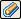

Create a 3D section view (ordered environment)
-
Choose the PMI tab→Model Views group→Section command

. -
(Optional) On the Section command bar, click the Options button.
In the Section Options dialog box, edit or confirm the default settings for section caption, dimension style, and cutting plane annotation.
-
(Plane Step) In the graphics window, click to specify the reference plane or model face to use to draw the cutting plane profile, and then click the Accept button on the command bar.
To change the reference plane type, select an option from the Create-From list.
Example:To select an existing sketch element, such as a line, choose the Select From Sketch option from the list and then click the line.
-
In the graphics window, use the available drawing commands to draw the cutting plane profile.
Note:When you define a cutting plane profile, a profile view is displayed and drawing commands are displayed.
-
On the ribbon, click Close Sketch to validate the profile and continue constructing the section view.
-
(Side Step) In the graphics window, click to define the side of the profile from which you want to remove material.
-
On the command bar, click the Finite Extent option, and then define the extent of the material you want to remove.
Example:You can define extent graphically and enter a value in the Step box to control cursor movement. Or you can type a specific value for the extent in the Distance box.
-
On the command bar, from the Cut List, choose whether you want to cut all the parts in the model, cut only the selected parts, or cut only the unselected parts.
If you choose Cut Only Selected Parts, then in the graphics window click the parts you want to cut away, then click Accept. If you selected one of the other options, skip to the next step.
-
Click Preview to see a graphical preview of the section.
-
Click Finish to create the section view.
Look for the section name in the Section Views collection on PathFinder.
-
3D section views are associative to the models affected by the cut. When a model changes, the section view is updated.
-
To specify how cuts are displayed, change the settings in the Section Display Options dialog box.
How do I
Create a 3D section view (synchronous environment)Edit a 3D section view
Apply or remove a section cut
Expose a 3D section in a drawing
Create a section view using non-associative planes
Create a section view using associative planes
Learn more
3D section views of modelsLook up more details
3D section view editing commandsProperties command (3D section views)
Section Display Options command (3D section views)
Section Display Options dialog box
Section Options dialog box (3D sections)
Section command bar (synchronous environment)
Section command bar (ordered environment)
Edit Profile command (3D section views)
Section command (Part, Sheet Metal, and Assembly)
Section by Plane command
Section by Plane command bar
Section by Plane Options dialog box